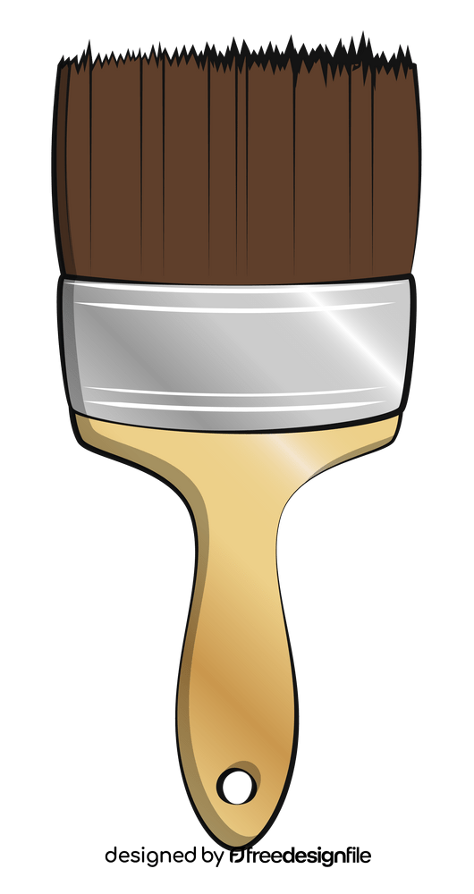
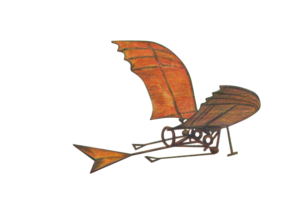
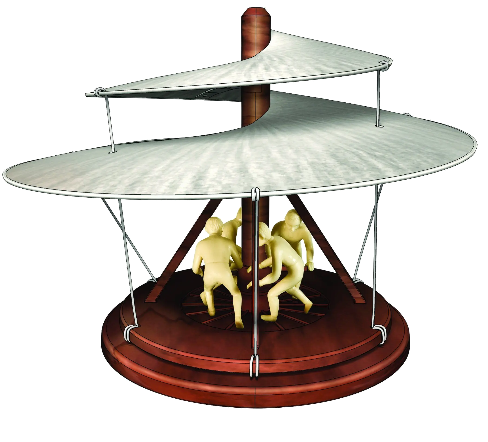
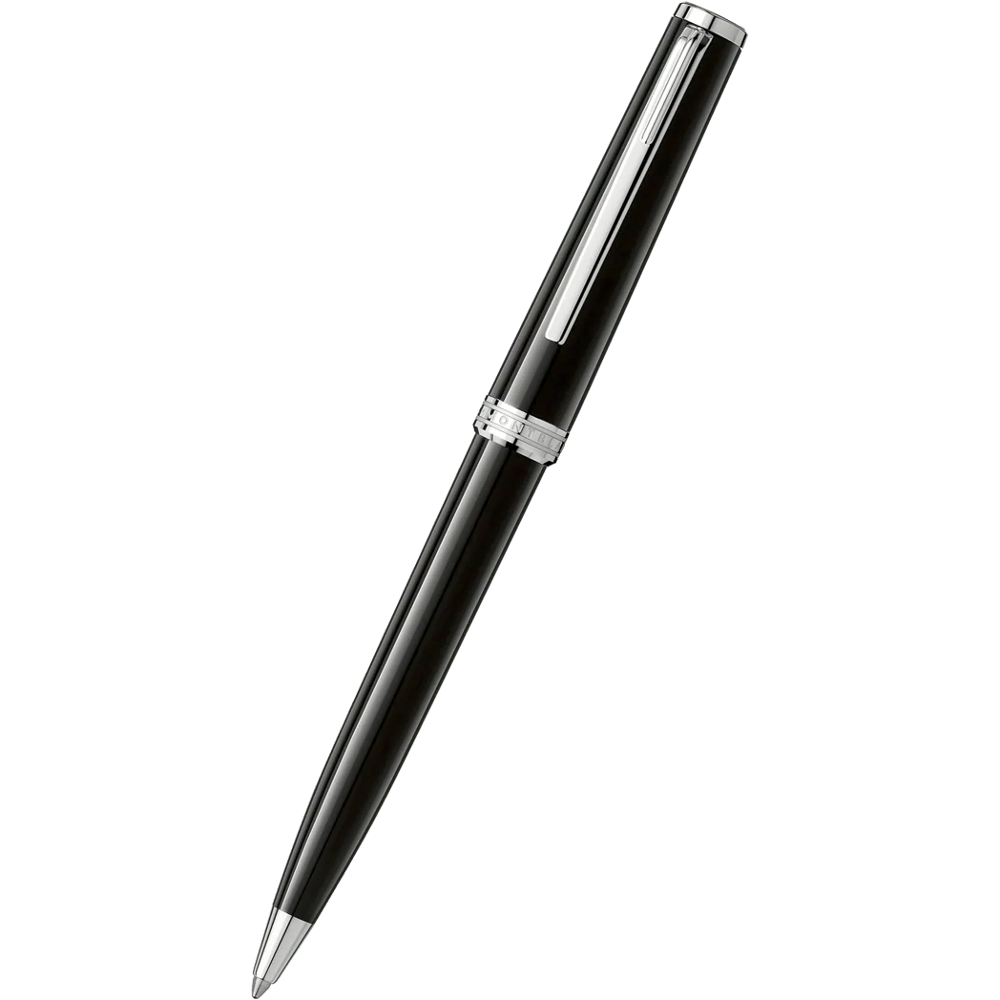
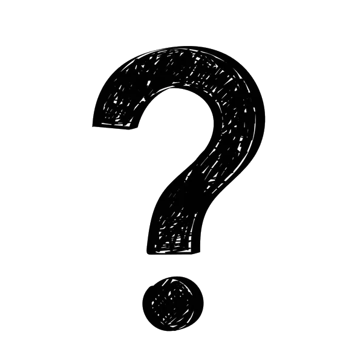

Inhoud
- Wie was Leonardo da Vinci?
- Jeugd van Leonardo
- Wat heeft hij geschilderd?
- Wat heeft hij uitgevonden?
- Meer over de luchtschroef
- Wist jij dat?
- Vragen tips of tops
Wie was Leonardo da Vinci?
- Leonardo di Ser Piero
- 15 apr 1452
- Uitvinder
- Schilder
- 2 mei 1519
- 67 jaar oud
Jeugd van Leonardo
- Piero en Chararia
- Broer & zus
- Platteland
- School
- Notarissen
Wat heeft hij geschilderd?
- Mona Lisa
- Het laatste avondmaal
- Man van Vitruvius
- De dame met een hermelijn
- Johannes de Doper
- En meer...

Wat heeft hij uitgevonden?
- Luchtschroef
- Draaibrug
- Vliegmachine
- Pantserwagen
- Katapult
- Parachute
- Veel meer...

Meer over de luchtschroef
- Helix pteron
- Helikopter
- Lijkt op schroef
- Niet gemaakt
- Werkt niet

Meer over de luchtschroef
- Het idee
- Het verschil
- Oude China
- Luchtvaartuig met rotor
Wist je dat?
- Beroemste schilderij.
- Wie was de vrouw?
- Spiegelbeeld
- Fabels
- Beeldhouwer
- Muziek

Vragen
tips of
tops?
